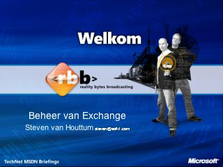

Keynote - De Reality Bytes Broadcasting Show
Speaker(s): Tony Krijnen,Daniël van Soest
De Nieuwe Mogelijkheden van Windows Server 2003 R2
Speaker(s): Daniël van Soest
Beveiliging in Microsoft Windows Vista
Speaker(s): Tony Krijnen
Microsoft Office 2007 en de Nieuwe Server Mogelijkheden
 Speaker(s): Bart Wessels
Speaker(s): Bart Wessels
WinFX Introductie
Speaker(s): Martin Tirion
Windows 2003 SP1 Terminal Services en Citrix Presentation Server 4.0
 Speaker(s): Ardan van der Voort van der Klei
Speaker(s): Ardan van der Voort van der Klei
Bent u Klaar Voor de Uitdaging van IPv6?
Speaker(s): Martijn Bellaard
Beheer van de Microsoft Exchange Server Omgeving

Speaker(s): Steven van Houttum
Windows Workflow Foundation
Speaker(s): Dennis Mulder
BizTalk 2006
Speaker(s): Erik Oppedijk